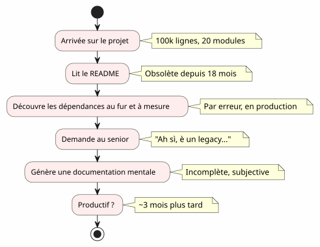
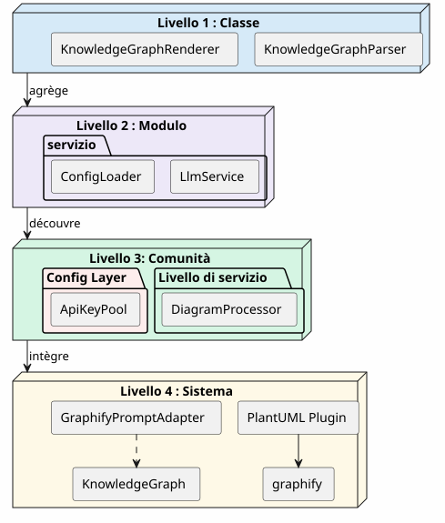
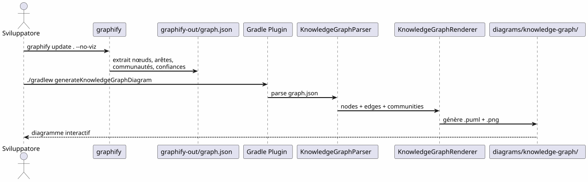
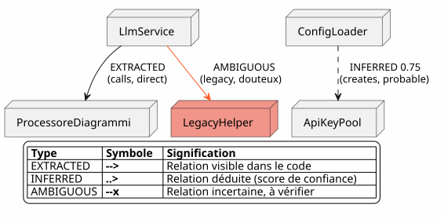
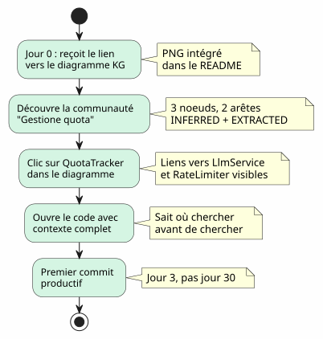

Il Knowledge Graph come strumento di comprensione della codebase
Publié le 20 April 2027
- Il muro dell’onboarding
- Che cos’è un Knowledge Graph ?
- I 4 livelli di comprensione
- Il contesto perduto : uno scenario concreto
- Pipeline: codice à la carte in un unico comando
- Tipi di lati: cosa dice la fiducia
- 5 minuti per generare il tuo Knowledge Graph
- Valore per l’onboarding: lo scenario Anaïs rivisto
- Valore per la navigazione quotidiana
- Limiti e prospettive
- Conclusion
Ti trovi su un progetto di 100 000 linee. Venti moduli, cento classi, dipendenze invisibili, una storia di refactorings dimenticati. Il README promette un’architettura "microservices" ma il codice racconta altro. Quanto tempo per essere produttivo?tre mesi— se hai fortuna. E se una mappa interattiva del codice, generata automaticamente, potesse ridurre questo a tre giorni?
- toc
-
[]
Il muro dell’onboarding
Ogni sviluppatore ha vissuto questa scena :
-
Giorno 1: ti mostriamo il README (ultimo aggiornamento: 18 mesi fa)
-
Giorno 3: voi scoprite che il modulo`billing`chiama in segreto il modulo`notification`
-
Giorno 7 : un senior ti dice "Ah sì, questa classe fa effettivamente due cose, avevamo previsto di dividerla
-
Giorno 14 : ti rendi conto che tutta l’intelligenza di business si trova`utils/LegacyHelper.java`— un file che non è riferito da nessuna parte

Il problema non è la mancanza di documentazione — è ilmancanza di carta. Una mappa che mostra il territorio reale, non il territorio immaginario dell’ultimo redesign.
Che cos’è un Knowledge Graph ?
Un Knowledge Graph è una rappresentazione strutturata delsaperecontenuto nel tuo codebase :
| Entità | Esempio nel codice | Ruolo nel grafo |
|---|---|---|
Nodo |
Classe, funzione, concetto |
Vertice del grafo |
Spigolo |
Appello, eredità, importazione |
Collegamento tra due nodi |
Comunità |
Gruppo di classi correlate |
Cluster visivo |
Tipo di spigolo |
EXTRACTED, INFERRED, AMBIGUOUS |
Fiducia nella relazione |
Punteggio di fiducia |
0.0 à 1.0 |
Affidabilità di un bordo INFERRED |
iperarco |
Relazione 3+ nodi |
Complessità architettonica |
La differenza con un semplice diagramma UML?Un diagramma UML mostra ciò che lo sviluppatore ha deciso di mostrare. Un Knowledge Graph mostra ciò che è realmente lì, comprese le dipendenze nascoste e i concetti emergenti.
I 4 livelli di comprensione
Un Knowledge Graph permette di navigare versoquattro scale:

| Livello | Domanda | Granularità | utensile |
|---|---|---|---|
1 — classe |
Che cosa fa questa classe ? |
Riga di codice |
IDE, navigatore |
2 — Modulo |
Quali sono i file di questo modulo ? |
Fascicolo |
|
3 — Comunità |
Quali concetti lavorano insieme? |
Gruppo collegato |
Grafo della conoscenza |
4 — Sistema |
Come tutto si articola? |
Architettura globale |
Diagramma KG completo |
Senza Knowledge Graph, i livelli 3 e 4 sonoinaccessibili— o almeno, soggettivi e obsoleti.
Il contesto perduto : uno scenario concreto
Immagina un nuovo sviluppatore, Anaïs, che arriva al progetto. Deve aggiungere una funzionalità di "quota tracking" per le chiamate LLM.
Failed to generate image: PlantUML preprocessing failed: [From <input> (line 21) ]
@startuml
skinparam backgroundColor #FEFEFE
skinparam componentStyle rectangle
actor "Anaïs (nuova)" as ana
rectangle "Cosa sta cercando" {
[QuotaTracker] as qt
[ApiKeyPool] as akp
[RateLimiter] as rl
}
rectangle "Cosa trova" {
[LlmService] as ls
[ConfigLoader] as cl
}
ana --> ls : "Cerca 'quota'\nnell'IDE"
ls --> cl : "Trova ConfigLoader\n(menziona 'quota'\nin un commento)"
cl --> qt : "3 settimane più tardi:
scopri QuotaTracker
^^^^^
Syntax Error? (Assumed diagram type: component)
@startuml
skinparam backgroundColor #FEFEFE
skinparam componentStyle rectangle
actor "Anaïs (nuova)" as ana
rectangle "Cosa sta cercando" {
[QuotaTracker] as qt
[ApiKeyPool] as akp
[RateLimiter] as rl
}
rectangle "Cosa trova" {
[LlmService] as ls
[ConfigLoader] as cl
}
ana --> ls : "Cerca 'quota'\nnell'IDE"
ls --> cl : "Trova ConfigLoader\n(menziona 'quota'\nin un commento)"
cl --> qt : "3 settimane più tardi:
scopri QuotaTracker
esiste già"
note right of qt
**Contexte perdu :**
QuotaTracker était dans
un module non-référencé
dans le README
end note
@enduml
Con un Knowledge Graph, Anaïs avrebbe visto in5 minuti(blank)
-
QuotaTracker`è collegato a`ApiKeyPool(spigolo)ESTRATTI) -
RateLimiter`è legato a`QuotaTracker(spigolo)dedotto, confidenza 0.82) -
Questi tre nodi formano unacomunitàgestione delle quote
-
Un hyperedge collega anche`LlmService`— il punto di ingresso
Pipeline: codice à la carte in un unico comando
Il pipeline Graphify + Plugin Gradle trasforma il tuo codebase in un diagramma PlantUML indue comandi:

Zero LLM.Tutto è deterministico: stesso codice, stesso grafo, stesso diagramma. Riproducibile, versionabile, consultabile offline.
Tipi di lati: cosa dice la fiducia

I tipi di bordi sono cruciali per l’onboarding :
-
ESTRATTO: puoi navigare serenamente — è nel codice
-
dedotto(0.6-0.8) : probabilmente corretto, ma controlla prima di rifattorizzare
-
DEDOTTO(0.8+) : molto affidabile — usalo come riferimento
-
ambiguo: attenzione, punto sensibile. Chiedi a un senior.
5 minuti per generare il tuo Knowledge Graph

# 1. Installer graphify
pip install graphify==0.4.29
# 2. Générer le Knowledge Graph
graphify update . --no-viz
# 3. Vérifier le JSON
cat graphify-out/graph.json | jq '.nodes | length'
# → 47 nœuds
# 4. Générer le diagramme
./gradlew generateKnowledgeGraphDiagram
# 5. Filtrer par communauté
./gradlew generateKnowledgeGraphDiagram -Pplantuml.kg.community="service layer"
# 6. Limiter la taille
./gradlew generateKnowledgeGraphDiagram -Pplantuml.kg.maxNodes=20Valore per l’onboarding: lo scenario Anaïs rivisto
Con il Knowledge Graph, lo scenario di Anaïs cambia radicalmente :

Il Knowledge Graph non sostituisce l’IDE— lo completa. L’IDE mostra dove; il KG sale perché e come si articola.
Valore per la navigazione quotidiana
L’onboarding non è l’unico caso d’uso. Per uno sviluppatore senior, il Knowledge Graph serve a:
Failed to generate image: PlantUML preprocessing failed: [From <input> (line 11) ]
@startuml
skinparam backgroundColor #FEFEFE
skinparam usecaseStyle roundrectangle
left to right direction
actor "Sviluppatore" as dev
usecase "rifattorizzazione" as ref
usecase "Rivista\ndi architettura" as rev
usecase "Debug
^^^^^
Syntax Error? (Assumed diagram type: component)
@startuml
skinparam backgroundColor #FEFEFE
skinparam usecaseStyle roundrectangle
left to right direction
actor "Sviluppatore" as dev
usecase "rifattorizzazione" as ref
usecase "Rivista\ndi architettura" as rev
usecase "Debug
dipendenze" as dbg
usecase "Inserimento" as onb
usecase "Documentazione
autogenerata" as doc
dev --> ref
dev --> rev
dev --> dbg
dev --> onb
dev --> doc
ref --> ("Identificare
i hot spot") : hyperedges\ndensité d'arêtes
rev --> ("Verificare
i confini") : AMBIGUOUS\naux limites
dbg --> ("Tracciare
le chiamate") : EXTRACTED\nchaîne de calls
onb --> ("Esplora\nle comunità") : filtres\npar cluster
doc --> ("Generare
i diagrammi") : ./gradlew\ngenerateKnowledgeGraphDiagram
@enduml
| caso d’uso | Come il KG aiuta | Esempio concreto |
|---|---|---|
rifattorizzazione |
Visualizza gli iperarchi (collegamenti 3+) |
Queste 5 classi sono sempre legate — estrae un modulo |
Revisione architettura |
Détecte les AMBIGUOUS aux frontières |
La chiamata tra billing e notification è incerta |
Debug |
Traccia la stringa EXTRACTED |
Perché LlmService chiama LegacyHelper? |
inserimento |
Esplora le comunità per filtro |
Cos’è il 'service layer'? |
Documentazione |
Genera i diagrammi nella CI |
README sempre aggiornato |
Limiti e prospettive
Un Knowledge Graph non è una bacchetta magica :
| Limite | Spiegazione | Aggiramento |
|---|---|---|
Codice statico solo |
Nessun runtime, nessun flusso di dati |
Completa con le tracce APM |
INFERRED può essere falso |
Gli spigoli dedotti necessitano di validazione |
Punteggio di fiducia + revisione umana |
Nessuna semantica di business |
Il KG sa “LlmService appelle ConfigLoader”, non "`c’est le point d’entrée auth |
Annotazioni manuali o post-elaborazione LLM |
Nessuna temporalità |
Uno snapshot del codice, non la sua evoluzione |
Generare regolarmente + confrontare le versioni |
Prospettive:
-
Differenza KG: confrontare due versioni per vedere gli spostamenti delle comunità
-
KG interattivo: clic su un nodo → apertura IDE alla linea corrispondente
-
KG storico: visualizzare l’evoluzione delle comunità nel tempo (debito tecnico che migra)
Conclusion
Il Knowledge Graph trasforma un attosolitario e lungo(comprendere un codebase) in un attocondiviso e veloce(consultare una mappa).
Non è documentazione — ècartografia. Una mappa che si aggiorna automaticamente, che mostra il territorio reale, e che permette a ogni sviluppatore, nuovo o senior, di navigare con fiducia.
pip install graphify==0.4.29
graphify update . --no-viz
./gradlew generateKnowledgeGraphDiagram3 comandi. 5 minuti. Una mappa del tuo codebase.
Articoli correlati
14 May 2026